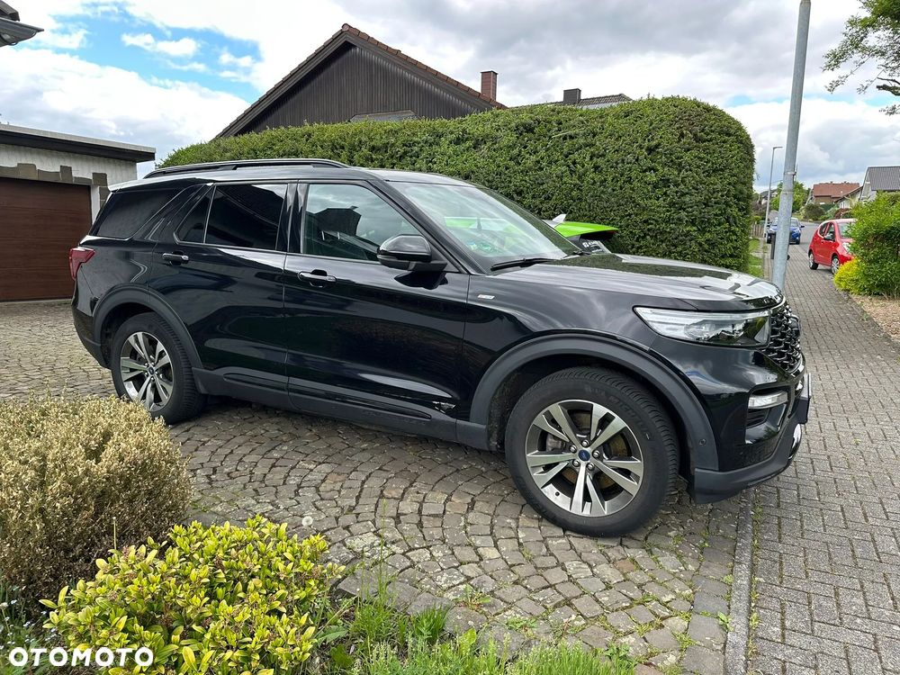

Na sprzedaż Ford Explorer 3.0 Plug-in Hybrid, użytkowany od nowości przez pierwszego właściciela – cały czas w jednych rękach. Samochód znajduje się w Niemczech i był regularnie serwisowany wyłącznie w ASO Ford na terenie Niemiec.
Auto utrzymane w idealnym stanie. Możliwość ładowania baterii z gniazdka w domu, zasięg na samym napędzie elektrycznym wynosi około 50 km, a moc silnika elektrycznego to 101 KM.
Suma układów napędowych: 458km
Istnieje możliwość przyjazdu autem do miejscowości podanej w ogłoszeniu.
Zapraszam do rozmowy po więcej informacji.
